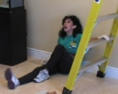
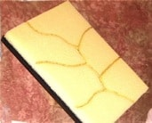
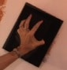
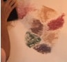
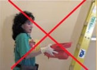
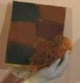
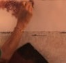

by Sandy Silva (updated 2015)
So you want to learn Faux Painting? Great! I remember when I first wanted to try just a simple sponging technique. Might I add that sponging is what it was called; I had never heard of the word Faux. I did my mom's bathroom and thought it looked cool. Now I would cringe if I had to show anyone what that bathroom looked like 17 years ago. Faux Painting has come a long way since then. I guess I should say, faux painters have come a long way because the art has been around for a lot longer. Take the time to read this article. May my experience save you time in learning this beautiful type of art.

A friend of mine owned a painting company and asked if I knew the sponging, ragging stuff you do on the walls. I told him about my mom's bathroom and he gave me my first job. person collasped from climbing ladderI came home after the first day and figured I would have to retire right away. My back and arms were killing me. I must have climbed up and down my ladder at least a hundred times....I am not kidding! I said to myself....there has got be be an easier way.
I asked for a faux painting book for Christmas in 1998 and began to desire to do more sophisticated, elegant finishes. However, after reading how to paint them, I said forget it, this will take me forever! In addition, the mess I would have to deal with turned me off. Again I said to myself .... there has got be an easier way.
If you take a look at how other faux painting companies achieve most of their finishes, you will notice that they involve using rollers, expensive brushes and lots of time consuming steps. multi color faux paletteHowever, I did find any easier way...and that is how the Multi Color Faux Palette was born. Let me be totally honest, though. I did pray to God and asked Holy Spirit to give me an easier way to achieve these beautiful finishes and He did. At the risk of sounding too spiritual, I did promise to give Him the glory; that is why I mention this important detail.

With this tool you are able to apply the glazes or paints on the wall so easily, eliminating the application of them with a brush or roller which takes so much more time, not to mention the clean up afterwards.


In addition, you can apply more than one color at a time! With other systems, you have to carry dabbing sponge on paletteblending colors on wallup multiple trays and take the risk of dropping them. There is no need to blot on paper because you get just the amount of glaze you need.

Now Faux Brick, Faux Stone, Color Washing, Old World, Faux Marble and Multi Color Stenciling can be done in 1/2 the time!


Many had asked me to teach them how to Faux Paint. I would have to tell everyone that I could not teach them with my system because they couldn't buy my tools anywhere since I made them by hand. Then my assistant suggested that I patent my faux painting tools and sell them. So proceeded to do so. Praise God, It took 5 years but I finally got the patent(7472450).
I had approached a few companies to sell the tools through. Any company I approached thought the system was great including the popular QVC Home Shopping program. However, after much prayer, I decided to sell the product myself. This way I can save the consumer money and market it the way I feel would be best.
Our BASIC KIT INCLUDES Multi Color Faux Palette, 2 Poofy Pads, 2 Tuck and Gather tools and Workshop DVD. It's now on sale for only $41.99 for a limited time.